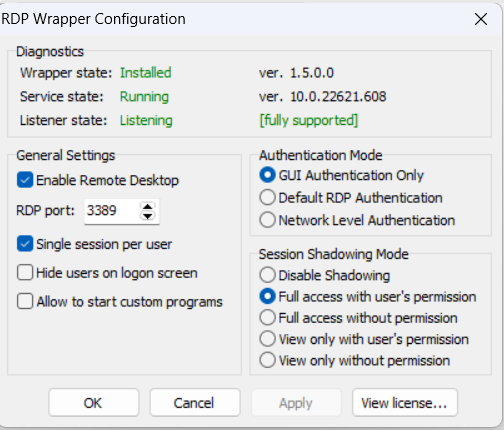
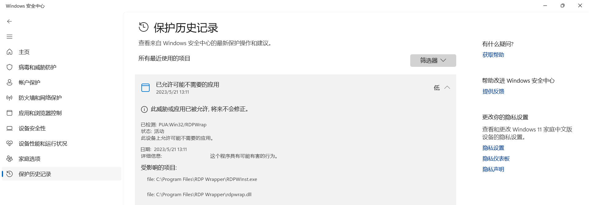

05/21 RDP (remote desktop protocol) 设置
刚刚远程启动了一台电脑的 RDP 服务，真是心闷气短，不吐不快。
Windows 上有很多远程桌面工具，可以通过网络，把桌面投射到联网的任何一台电脑上，无缝办公。 经过测试，我最后使用的主力是 Windows 自带的“远程桌面连接”应用 Windows Remote Desktop remote desktop，以下直接简称 RDP。 由于电脑没有公网 IP，我又注册了个 tailscale IP， 从此就可以用它给的公网 IP 连到远程电脑上。
我的电脑是 Windows 11 家庭版，是经典的“官方不支持 RDP”版本。不过 RDP 只要在被控电脑上能启用相关的服务即可。 参考了一些网上的建议，用 RDP Wrapper Windows Windows Remote Desktop 开启了 RDP 功能。这个工具的包装非常好，老版本一直可以使用，而且我至今仍然不需要知道它工作的原理。 缺点是更新系统后有可能会失效，需要到 GitHub issues 中寻找相应版本的 .ini 文件更新。虽然原作者不再更新， issues 区却十分活跃，几乎就是个小社区，永远有人在那里贴出各种问题的解决方法。
今天 RDP 又挂了，本打算走过去检查一下，但是想起来昨天安装了 RustDesk remote desktop， 于是拿手机试着连一下。RustDesk 我没有设置开机自启，没想到居然连上了。它支持多个平台，但有时候响应非常缓慢， 可能是服务器问题。这样的效果是没法当主力远程桌面的，但是可以救急，比如眼下的情况。
点开几个无响应的窗口后，我放弃了直接用它下载 RDP Wrapper 更新文件，选择打开 ToDesk remote desktop。ToDesk 是我上一个主力远程桌面工具。弃用的原因很简单，在疫情中我被隔离，于是试图用它连上远程电脑， 它掉链子了。过了几个月又打开它，发现连是连上了，但是投屏居然只有 640x480 的分辨率，还不能调整大小， 有可能是版本老旧的问题。当然，相比之前的 RustDesk 的响应能力是强了不少。我于是继续配置 RDP。
打开配置窗口，发现确实飘红了，但是对比了一下显示的版本和配置文件，感觉配置文件已经足够新。 重启系统的远程桌面服务，直接就卡住了，没办法只好重启。我再运行 RDP Wrapper 自带的 update.bat， 则显示“禁止访问”，提升权限也没用，而且一运行，Windows 安全中心就会弹出一个窗口。
我一开始以为是个无害的多余应用扫描，看了几条回复后觉得这个窗口其实是问题的关键。于是在 Windows 安全中心里关掉了这个检查。 然后 update 就成功了。排错结束。
今天算是把这些远程桌面挨个拖出来试水了。RustDesk 大概受限于网速，我几乎是不可能用它当主力的。不过上次在 iPhone 上用它的效果还不错，可能是离得近的缘故。 它支持多端，而且自启，我决定还是像今天一样拿来做救急用。以后如果有功夫捣鼓自建服务器，说不定更有重回主力的一天。ToDesk 稳定性不能保证， 所以永远只是个可选项。RDP 无缝衔接两台电脑，在可预见的未来里还会是我的首选。 在网上还搜到了这么个东西 Chrome remote desktop Chrome remote desktop，但是试了下没法安装。